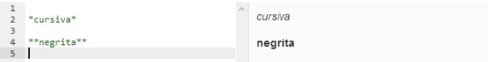
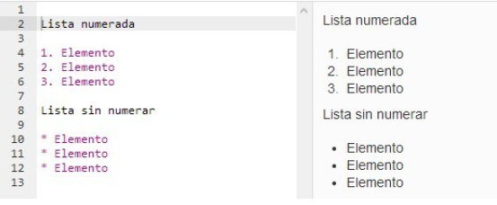

Markdown es un lenguaje de marcado que facilita la aplicación de formato a un texto empleando una serie de caracteres de una forma especial. En principio, fue pensado para elaborar textos cuyo destino iba a ser la web con más rapidez y sencillez que si estuviésemos empleando directamente HTML. Y si bien ese suele ser el mejor uso que podemos darle, también podemos emplearlo para cualquier tipo de texto, independientemente de cual vaya a ser su destino.
La sintaxis es muy sencilla y cuenta con varias opciones diferentes para algunos de sus elementos. Básicamente, se trata de añadir ciertos caracteres al inicio de la línea o antes y después de los elementos a los que vamos a aplicar el formato. Veamos a continuación tan sólo algunos ejemplos para hacernos una idea de su sencillez de uso.
En cuanto a las listas, dado que en HTML hay de dos tipos, numeradas y sin numerar (u ordenadas y desordenadas), usaremos números seguidos de un punto y un espacio para cada elemento en el caso de las primeras y asteriscos y un espacio (ahora sólo al principio), signos más o guiones para las segundas.
de esta forma podemos ver como el markdown podria substituir de todas el HTML en estas etiquetas de ejemplo